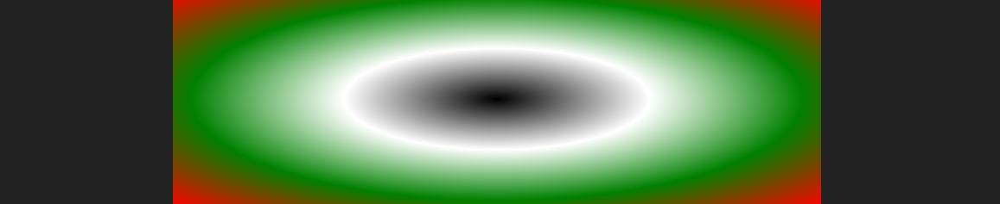

Na sessão anterior estudamos a fundo o trabalho com cores no CSS, e nesta sessão daremos seguimento a este assunto estudando os gradientes, que permitem criar backgrounds, seja de página, seja de elementos, de maneira mais elegante sem ter de inserir imagens, garantindo assim um tamanho em disco menor para a página e otimizando seu carregamento.
No CSS temos três tipos de gradientes, Linear, Radial e Cônico, e quatro tipos de uso, pois podemos criar gradientes múltiplos formando malhas. Um gradiente básico é criado assim:
<div class="minhaDiv"></div>
<style>
.minhaDiv {
background: linear-gradient(yellow, maroon);
width: 300px; height: 80px;
}
</style>
Aqui temos um gradiente que vai de amarelo a marrom e possui como ângulo padrão 0deg, ou 0º, que é o ângulo de rotação, e possui uma direção padrão definida como “From Top To Bottom”, simplificada como to bottom, o que quer dizer que o gradiente é aplicado de cima para baixo. Este é o resultado:
Os valores de direcionamento do gradiente são:
to top: de baixo para cima.
to bottom: de cima para baixo.
to right: da esquerda para a direita.
to left: da direita para a esquerda.
Vejamos um gradiente aplicado da esquerda para a direita:
background: linear-gradient(to right, yellow, maroon);
O resultado é este:
Podemos criar gradientes diagonais combinando duas direções:
background: linear-gradient(to top left, yellow, maroon);
O primeiro exemplo cria um gradiente aplicado do canto inferior direito e direcionado ao quanto superior esquerdo. O segundo exemplo é o oposto:
background: linear-gradient(to bottom right, yellow, maroon);
A propriedade background não pode ser aplicada duas vezes no mesmo seletor.
Gradientes diagonais podem ser aplicados com qualquer ângulo de rotação, para tal, basta defirmos o grau utilizando a unidade deg (degree):
background: linear-gradient(45deg, yellow, maroon);
Quanto à quantidade de transições do gradiente, pode ser quantas forem necessárias:
background: linear-gradient(45deg, yellow, maroon, cyan, green);
O resultado é este:
Por padrão o espaço que cada cor ocupa é igual, o que significa que num gradiente com duas cores, cada uma ocupa 50% de espaço. No entanto, é possível definir a parada de cada cor assim:
background: linear-gradient(90deg, black 5%, #333 10%, white 50%, #333 90%, black 95%);
Neste exemplo, teremos 5% de preto de cada lado, seguido de mais 5% de cinza (#333) e o restante branco:
Podemos ainda de maneira mais prática definir o ponto médio da transição entre duas cores assim:
background: linear-gradient(90deg, red, 90%, green);
Neste exemplo, o ponto médio da transição entre a primeira e a segunda cor está em 90% do espaço, veja o resultado:
Gradientes radiais funcionam basicamente como os gradientes lineares com algumas opções de configuração a mais, podemos definir um gradiente radial simples com duas cores:
background: radial-gradient(black, white);
Ou com várias cores:
background: radial-gradient(black, white, green, red);
Este é o resultado:
Note que o gradiente radial é esticado formando uma elipse, essa propriedade pode ser alterada como mostrado a seguir, no primeiro exemplo o resultado é semelhante ao anterior, no segundo o gradiente produz um círculo que pode ser cortado em cima e embaixo ou nas laterais de acordo com o formato do recipiente:
background:radial-gradient(ellipse, black, white, green); background:radial-gradient(circle, black, white, green);
O centro do gradiente também pode ser definido, neste caso devemos levar em conta que a posição 0 0, é referente ao canto superior esquerdo do recipiente, assim:
background: radial-gradient(at 0 0, black, white);
O centro exato é definido com 50% em ambos os valores:
background: radial-gradient(at 50% 50%, black, white);
E uma posição personalizada é definida indicando o deslocamento na horizontal, seguido do deslocamento na vertical:
background: radial-gradient(at 0 50%, black, white, green);
No exemplo acima, o centro é deslocado 50% para baixo.
Para criar gradientes cônicos, o processo é exatamente o mesmo que os radiais, a única diferença é na sintaxe do valor e no resultado, o gradiente cônico é criado assim:
background: conic-gradient(at 0 0, black, white, green);
Este é o resultado:
Até agora trabalhávamos com apenas um gradiente por propriedade, no entanto, podemos definir vários gradientes separados por vírgula, ressaltando que caso não contenham transparência, somente um será visível. Considere o seguinte CSS:
background: linear-gradient(45deg, red, transparent 65%),
linear-gradient(135deg, green, transparent 65%),
linear-gradient(225deg, yellow, transparent 65%),
linear-gradient(315deg, blue, transparent 65%);
Neste exemplo, cada gradiente possui um ângulo de rotação diferente, e a segunda cor é transparente, dessa maneira, a primeira cor de cada um ocupa um dos cantos do recipiente formando a malha. Este é o resultado:
Os gradientes não precisam abarcar 100% da superfície do recipiente, mas podem ocupar apenas uma parcela e repetirem-se, podemos repetir gradientes lineares e radiais. A repetição de um gradiente é feita da seguinte maneira:
background: repeating-linear-gradient( black 5%, white 10%);
O exemplo produz o seguinte resultado:
As medidas, não somente de gradientes, mas também de outros valores no CSS podem ser definidas em pixels. No exemplo abaixo, o preto ocupa 10px e o branco mais 10px, ressaltando que uma medida em pixel não se adapta ao tamanho do recipiente como é o caso da porcentagem. Observe este código:
background: repeating-linear-gradient(black 10px, white 20px);
Gradientes não precisam necessariamente terem uma transição gradual de cores, duas ou mais cores podem ser definidas sem nenhuma transição, para tal, basta que a mesma cor tenha dois pontos de parada (stops), e a próxima se inicie no mesmo ponto de parada da anterior, como neste exemplo:
background: repeating-linear-gradient( black, black 10px, white 10px, white 20px);
O resultado será este:
E… podemos ainda, a título de exemplo, utilizar mais de um gradiente como propriedade utilizando repetição, no exemplo a seguir, temos dois gradientes definidos com transparência e ângulos diferentes:
background: repeating-linear-gradient(45deg, #0007, #0007 10px, #FFF7 10px, #FFF7 20px),
repeating-linear-gradient(-45deg, #0007, #0007 10px, #FFF7 10px, #FFF7 20px);
O resultado é este: